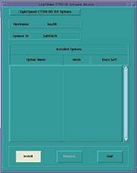
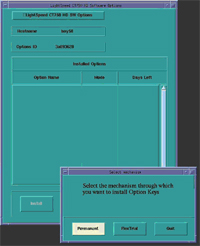
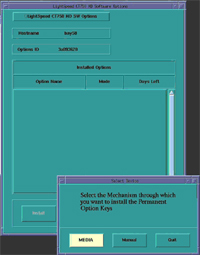
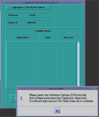
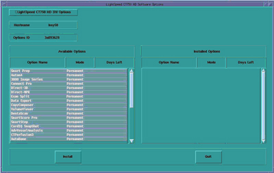
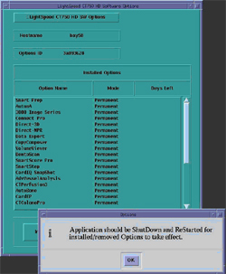
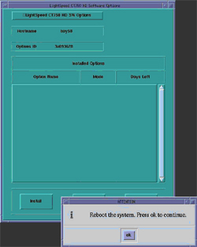

Operating Documentation
Direction 5307452-8EN, Rev# 4
Discovery CT750 HD Service Methods - Adv
Operating Documentation |
| Last Revised: | 13 November 2008 |
| NOTE: | If you do not have the Options DVD-RAM, you can use the eLicense feature. Follow this link to the eLicense Page:http://egems.gehealthcare.com/elicense/index.jsp. |
| NOTE: | This section of the procedure will need to be repeated for each and every Option DVD-RAM, until which point all options have been installed. |
| NOTE: | The order in which Options are loaded is important. Use the following list for proper installation order. |
Option Install Order - HD
Smart Prep
AutomA
3000 Image Series
Connect Pro
Direct-3D
Direct-MPR
Exam Split
Data Export
CopyComposer
VolumeViewer
DentaScan
SmartScore Pro
SmartStep
CardIQ SnapShot
AdvVesselAnalysis
CTPerfusion3
AutoBone
CTColonoPro
CardIQXpressPlus or
CardIQ2XpressPro
CardEP
Sub-0.4-Second-Scan
NoiseReductionFilter
EKG Viewer
Patient-64-slice
VCT-Hi-Power
AxialShuttle
NeuroFilter
AutoFilter-and-Transfer
CardIQSnapShot-Cine
Dual Energy Viewer
ASIR
HelicalShuttle
Insert the Options DVD-RAM in the Peripheral Tower DVD-RAM drive.
Click on the Service icon to access the Common Service Desktop (CSD).
Click on Configuration Tab of CSD and select Software Options.
A Software Option Install Window will open. Select [Install] .
Illustration 1: Install Option Window

The Select Mechanism box appears.
Select [Permanent] .
Illustration 2: Select Mechanism Window

The Select Device box appears.
Select [MEDIA] .
Illustration 3: Select Device Window

Confirm Options DVD is installed in DVD-RAM Drive.
Select [OK] .
Illustration 4: Options DVD in Peripheral Drive Confirmation Window

Software options available for installation are displayed on the options screen.
Illustration 5: Select Options Window

Select Options by clicking on the first listed option and dragging the mouse downward to highlight the rest of the visible listed options. If Options list is longer than what is displayed (without moving the vertical slider), perform this step as many times as needed until all Options are loaded. Do not attempt to select all Options in one step. The user interface will not allow the selection of all Options beyond what is visible in the window.
Select [Install] .
Select [Quit] exiting the Select Options Window when the process is complete.
Select [Quit] again to exit Install Options window.
A window pops-up displaying: “Application should be shutdown and restarted for installed/removed options to take effect.”
Select [OK] .
Illustration 6: Select Options Window - Shutdown/Restart

A window pop-up displaying: “Reboot the System. Press OK to continue.”
Select [OK] .
Illustration 7: Select Options Window - Reboot

Reboot the System. Select [Shutdown] on the Desktop and select [Restart] , then [OK] on the Attention Window.
Allow the System to come up fully into Application Mode. If the CT Applications fail to start automatically, open a Terminal Window.
Type: {ctuser@hostname} st [ENTER] .
If performing a Load From Cold, return to GOC Load From Cold.
If installing new Option, perform System Scanning Test.